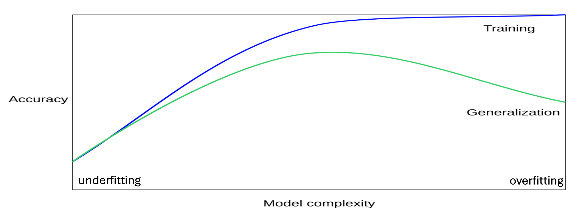
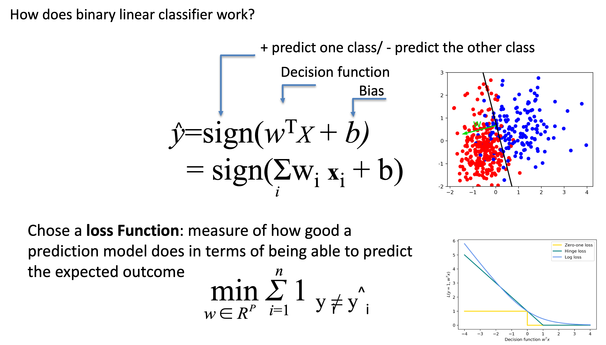
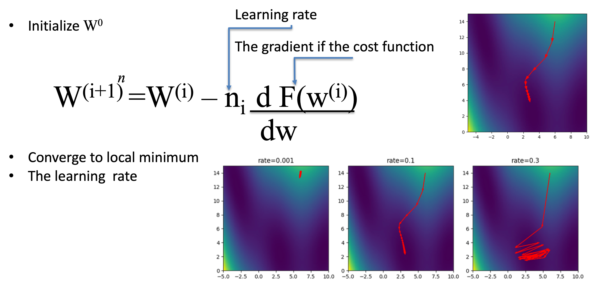

Module: Foundations of Machine Learning
Audience: 1st-year undergraduates
Time: ~120 minutes
- From rules to learning from data
- Core ML concepts and workflow
- Types of models: linear / non-linear, parametric / non-parametric
- How models learn (loss, optimization)
- Evaluation, overfitting, and data / ethics
Plan for Today
- Why Machine Learning? (from rules to learning)
- Core ML concepts & workflow
- Models and data: linear vs non-linear, parametric vs non-parametric
- How models learn: loss, gradient descent
- Evaluating models & avoiding traps
- Real-world issues: data quality & bias
- Wrap-up & questions
1. Why Machine Learning?
Before ML (Rule-based world)
- Symbolic AI: humans write If–Then rules
- Works well when:
- Rules are clear
- Data is clean and structured
- Fails when:
- Data is noisy, messy, ambiguous
- Patterns are too complex to write down
The New Way: Machine Learning
- Goal: Build learners, not hand-written rules
- We provide data (examples), not logic
- The computer learns patterns from data
- We design:
- The model form (architecture)
- The learning algorithm
Key idea:
Instead of programming every rule, we optimize a model to fit the data.
Discussion (2–3 min)
With a neighbor:
- Name one app or service you use (search, maps, recommendations, spam filter…).
- Which parts could be fixed rules?
- Which parts are likely learned from data?
We’ll collect 2–3 examples.
2. Core Machine Learning Concepts
We’ll use these terms all
- Data set: collection of examples
- Features: input variables (x)
- Labels / targets: what we want to predict (y)
- Model: mathematical function mapping x → y
- Training: fitting the model to known data
- Testing: checking performance on unseen data
What is Machine Learning?
“ML is a scientific discipline that deals with the construction and study of algorithms that can learn from data. Such algorithms operate in two steps: 1. Building a model based on the data
2. Using the model to make predictions and decisions rather than following explicitly programmed instructions.”
Types of Machine Learning (Overview)
- Supervised learning
- Inputs and labels
-
E.g., spam vs not-spam, disease vs no disease, house prices
-
Unsupervised learning
- Only inputs (no labels)
-
E.g., clustering customers, discovering groups
-
Reinforcement learning
- Agent interacts with environment, receives rewards
- E.g., game-playing, robot control
In this module we focus on supervised learning.
ML Workflow: Big Picture
Typical modelling lifecycle:
- Define the problem
(classification / regression / other) - Collect & explore data
- Pre-process and clean data
- Choose a model (algorithm)
- Train the model on training data
- Validate / tune the model
- Test the model on unseen data
- Deploy and monitor in the real world
The Machine Learning Work-Flow (Simplified)
- Input data
- Feature extraction / engineering
- Choose model + train
- Evaluate
- Deploy & use
(We’ll walk through each part at a high level.)
Is the Data Ready?
Often: No
- Wrong format (images, voice, text, logs)
- Missing values (e.g., unknown age)
- Noise and errors
We need:
- Pre-processing (cleaning, normalizing, encoding)
- Feature selection (which variables matter?)
- Feature engineering (creating new useful features)
Datasets: Train, Validation, Test
We don’t use all data at once:
- Training set
- Used to fit the model
- Validation set
- Used to tune hyperparameters (settings)
- Test set
- Used once, at the end, to estimate generalization
Typical simple split:
- 70–80% train
- 20–30% test
(or train / validation / test).
How to Split Data (Concept)
Ways to split:
- Simple train/test split
- Train / validation / test
- Cross-validation (CV):
- Use multiple folds; each fold gets a chance to be test data
- More stable estimate, but slower
- Special strategies:
- Stratified splits (keep class proportions)
- TimeSeriesSplit for time-ordered data
We won’t go into code details, but the idea is important.
3. What Is a Model?
Formal view
- A model is a function
$$f(x) \to y$$ - It has parameters (weights) that we learn
Intuition
- Model = recipe
- Inputs = ingredients
- Weights = how much of each ingredient
- Output = final dish
- Training adjusts the recipe until dishes taste “correct” on average.
Linear vs Non-Linear Models (Idea)
- Linear model
- Assumes a straight-line relationship
- Example form:
$$y = w_1x_1 + w_2x_2 + \dots + b$$ -
Decision boundaries are lines / planes
-
Non-linear model
- Can bend and curve
- Captures complex patterns (circles, waves, etc.)
Examples we’ll name (no math details):
- Linear: Linear Regression, Logistic Regression, Linear SVM
- Non-linear: Decision Trees, k-NN, Kernel SVM, Neural Networks
Parametric vs Non-parametric Models
Parametric models[2]
- Number of parameters is fixed, independent of dataset size
- Examples:
- Linear models
- Centroid-based models
- Pros: Simple, fast, less memory
Non-parametric models
- Number of parameters can grow with the data
- Examples:
- k-Nearest Neighbors
- Many non-linear SVMs
- Decision Trees
- Pros: Very flexible, can fit complex patterns
Example: A Linear Model
Predict exam score (y) from hours studied (x):
- Plot points (hours, score)
- Try to draw the best straight line through them
- Use this line to predict scores for new students
This is linear regression: a classic parametric, linear model.
Example: A Non-Linear Model
What if the relationship is not a straight line?
- Example: Performance increases with study time up to a point, then drops (over-study).
- A linear model struggles with this pattern.
- A non-linear model (like a decision tree or neural network) can bend the boundary to fit such shapes.
Lesson: choose model complexity to match data complexity.
Early and Common ML Problem Types
Early ML and modern ML solved:
- Game playing
- Strategy and search (checkers, tic-tac-toe, backgammon)
- Pattern classification
- Handwritten digit recognition, signal classification
- Regression
- Predicting continuous values (trend forecasting)
- Diagnostic support
- Early “expert systems” using data (e.g., medical support)
Common pattern:
input → transformation → output
learning the right transformation from data.
4. Models as Transformations (Matrices)
We often represent:
- Input data as vectors (lists of numbers)
- Model parameters as matrices (tables of numbers)
Matrix transformation:
- Input vector × matrix → output vector
- Geometric view: rotates and stretches the space
Learning = finding matrix values that make classes separable.
Visual Intuition: Space as Data
Imagine:
- Each example (image, email, etc.) is a point in a huge room
- Initially, points from different classes (cats/dogs) are mixed
A model (matrix):
- Reshapes the room (rotations, stretches)
- Tries to move cats to one side, dogs to the other
- So we can draw a simple boundary between them
Optional Insight (Instructor Note)
For you (not necessarily for students):
- Most directions (vectors) in space are rotated and scaled by a matrix.
- Eigenvectors are special: they keep their direction, only scale changes.
- In complex models, stable directions can correspond to important latent features.
You can mention “some directions in the data are more stable and important than others” without the word “eigenvector”.
From Rigid Maps to Dynamic Transformations
Symbolic AI (Rigid Map)
- Knowledge = fixed rules
- If data doesn’t match rules → failure
- Hard to maintain/update
Machine Learning (Dynamic Transformation)
- Knowledge = flexible parameters (weights in matrices)
- Model adapts to data
- We optimize the transformation, rather than writing rules
Analogy: Funnels and Water
- Symbolic AI
- Rigid metal funnel
- If water (data) comes from wrong angle, it spills
- Machine Learning
- Flexible funnel
- Changes shape/angle to catch water from many directions
Takeaway: ML changes the model to fit messy data.
5. How Models Learn: Training
We don’t know good weights upfront.
Training loop (conceptual):
- Start with random weights (bad model)
- Use model to make predictions on training data
- Measure how wrong we are (loss function)
- Adjust weights to reduce loss (optimization)
- Repeat many times until performance stabilizes
The Loss Function: Measuring Wrongness
- Loss function = error score
- Compares model prediction vs true label
- Larger loss → worse performance
Examples:
- Mean Squared Error (regression)
- Cross-Entropy Loss (classification)
We choose a loss function appropriate to the task.
Gradient Descent: Improving the Model
Imagine loss as a mountain landscape:
- Height = error
- We want to reach the lowest valley
Gradient descent:
- At the current point, compute the slope (gradient)
- Move a small step in the direction of steepest descent
- Repeat → gradually go downhill towards lower loss
Learning Rate: Step Size
Learning rate = how big each step is:
- Too large:
- Jump over the valley
- Training becomes unstable
- Too small:
- Training is very slow
- Can get stuck
Analogy: Hiking in the fog:
- You feel slope, but you don’t see the whole mountain.
- Step size matters.
Weights as Dials
Think of each weight as a dial:
- The model has many dials controlling how features affect output.
- Loss function = judge shouting louder when the output is wrong.
- Training:
- Turn each dial a little.
- If the judge shouts less → keep turning that way.
- Repeat until the shouts are minimized (loss is small).
Quick Check (3–4 min, pair discussion)
In pairs:
- What does the loss function tell us?
- What does gradient descent change?
- Why is learning rate important?
We’ll collect a few answers.
6. Choosing Algorithms: A Glimpse
There are many models with different properties:
- Basic models
- Nearest Neighbours
- Nearest Centroid
- Linear Classification & Regression
- Logistic Regression
- Non-linear models
- Support Vector Machines (SVMs) & kernels
- Decision Trees
- Random Forests
- Gradient Boosting
Choice depends on:
- Data size and type
- Interpretability needs
- Computational limits
Underfitting vs Overfitting
When training models:
- Underfitting
- Model too simple
- Misses important patterns
-
Bad on both train and test data
-
Overfitting
- Model too complex
- Memorizes noise in training data
- Good on train, bad on test
There is a “sweet spot” in model complexity[2].
Visual Intuition: Model Complexity
- Simple model: almost straight line → underfits
- Very complex model: wiggles through every point → overfits
- Good model: captures main trend without chasing every outlier → sweet spot[2]
Goal: generalization → good performance on unseen data.
Train / Validation / Test & Cross-Validation
To find the sweet spot:
- Use validation data to tune hyperparameters (e.g., tree depth, #neighbors)[3][4]
- Use cross-validation for more reliable estimates:
- Split data into k folds
- Train on k−1 folds, test on remaining fold
- Repeat k times, average performance
- Then finally evaluate once on the test set.
Model Families (Names Only)
Just to recognize names:
- Linear models:
- Linear Regression, Logistic Regression
- Distance-based:
- k-Nearest Neighbors, Nearest Centroid
- Tree-based:
- Decision Trees, Random Forests, Gradient Boosting
- Margin-based:
- Support Vector Machines (linear & kernel)
- Neural Networks:
- From shallow networks to Deep Learning
Details will come later in the course.
7. Evaluation Metrics: Beyond Accuracy
Example: fraud detection
- Fraud = 0.015% of transactions
- Model that always predicts “not fraud”:
- Accuracy ≈ 99.985%
- Catches zero fraud cases
Accuracy alone can be misleading.
Important metrics:
- Precision: of predicted positives, how many are truly positive?
- Recall: of true positives, how many did we catch?
Metric choice must match real-world costs.
8. The Reality of Data: "Garbage In, Garbage Out"
Models learn whatever is in the data:
- Incomplete training data → models fail in new situations
- Noisy data → unstable predictions
- Biased data → biased models
Most ML effort in practice:
- Data collection
- Cleaning & preprocessing
- Careful evaluation
Ethics Example: Biased Hiring
Simplified real case:
- Company trains model on 10 years of past hiring data.
- Historical hires are mostly from one group (e.g., men).
- Model learns to favor:
- Certain keywords
- Certain schools
- Certain CV patterns
- It down-ranks others (e.g., women’s colleges, “women’s club”).
Lesson:
Models reflect historical bias unless we actively detect and correct it.
Discussion (5–7 min)
In groups:
- Why is biased data dangerous in ML?
- Can a technically “good” algorithm still be unfair?
- Who should be responsible for monitoring ML systems in society?
Share 1–2 key points with the class.
9. Historical Engines (Optional Brief Story)
Post-symbolic key developments:
- 1980s–1990s: Neural networks + Backpropagation
- Enabled training of multi-layer networks
- 1990s–2000s: Statistical learning
- SVMs, Random Forests, Bayesian networks
- Focus on probability and optimal boundaries
- 2010s–now: Deep Learning
- Big data + GPUs → hierarchical feature learning
- 2020s–now: Transformers / Generative AI
- Context-aware transformations, large language models
Give students a sense of evolution, not only tools.
10. Summary: Foundations of ML
You should now be able to:
- Explain why we moved from rules to learning from data
- Describe the ML workflow (data → model → evaluation)
- Distinguish linear vs non-linear, parametric vs non-parametric models
- Explain loss, gradient descent, and learning rate
- Understand underfitting vs overfitting and why we split data
- Recognize why data quality and bias are critical
Exit Ticket (2–3 min)
Write or discuss:
- One concept you feel you understand well
- One concept you’re still unsure about
- One real-world problem where ML might be useful
We’ll use your answers to decide what to revisit next time.
Thank You
Next modules:
- Symbolic AI vs ML (deeper comparison)
- Specific model families and simple hands-on demos
Questions?
--
SECTION I
The Paradigm Shift in Computing
From Rules to Optimization
- Core question:
How do we get machines to do what we want?

From Rules to Optimization
- Core question:
How do we get machines to do what we want? - Old paradigm:
Humans write explicit rules the machine follows. - New paradigm:
Machines learn rules via mathematical optimization on data. - Enabler:
Big Data + large‑scale compute (data centers, clusters, GPUs).
The Traditional Approach: Explicit Programming
Workflow
- Humans design and script fixed rules.
- Rules + input data are executed by the computer.
- System outputs an answer.
Design profile
[Rules] + [Data] → Program → [Answers]
Limitation
- Works only when humans can precisely specify the rules
(e.g. sorting numbers, tax calculations, chess search).

The Machine Learning Approach
Inversion of control
- Instead of coding rules:
- Provide data + target answers (labels).
- A learning algorithm:
- Adjusts internal parameters via iterative training.
- Result:
- Learned rules / model.
Design profile
[Data] + [Answers] → ML Training → [Rules / Model]
The Dual Fuel of Modern AI
To discover useful rules without explicit programming, we need:
- Massive datasets (Big Data)
- Many diverse examples → better generalization
- Massive processing power (Data Centers)
- Billions of matrix operations
- Highly parallel hardware (GPUs, TPUs, clusters)
Without enough data or compute, many ML methods fail in practice.
Taxonomy of Machine Learning
Three broad families:
- Supervised Learning
- Learn from labeled examples (input → known output).
- Unsupervised Learning
- Discover structure in unlabeled data.
- Reinforcement Learning
- Learn to act via rewards and penalties over time.
We’ll briefly illustrate each.

Supervised Learning
Goal
- Learn a mapping from inputs to outputs
using labeled example pairs.
Data
- Requires human‑labeled or otherwise verified targets.
Common tasks
- Classification
- Fraud detection, image labeling, medical diagnosis.
- Regression
- Predicting prices, demand, or continuous trends.
Unsupervised Learning
Goal
- Find hidden structure or distributions in unlabeled data.
Data
- Only raw inputs; no explicit labels.
Common tasks
- Clustering
- Group customers by behavior patterns.
- Dimensionality reduction
- Compress high‑dimensional data into fewer, informative features.
Reinforcement Learning
Goal
- Train an agent to choose actions that maximize long‑term reward.
Mechanism
- Trial‑and‑error interaction with an environment.
- Receives rewards / penalties rather than labeled examples.
Key ideas
- Agent–environment loop
- Value functions: estimated future reward
What Is Machine Learning?
“Machine Learning is the scientific discipline concerned with algorithms that can learn from data.”
Two phases:
- Model building (training)
- Use historical data to fit an empirical model.
- Inference (deployment)
- Use the model to make predictions on new data
instead of following fixed, hand‑coded logic.
What Is Machine Learning?
- Before ML (Rule based world)
- Type of ML supervised, non supervised, reinforced
- ML Algorithms
- Breakthrough in ML
SECTION II
Data Pipelines & Workflows
The Reality of Data
Raw data is not ready for ML:
- Heterogeneous formats
- Images, audio, text, logs, tables
- Missing values
- Gaps in records, broken rows
- Noise
- Sensor errors, outliers, typos
- Feature transformation
- Encoding categories, scaling, normalizing, engineering features
Much of ML practice = data cleaning and preparation.

The End‑to‑End ML Workflow
High‑level pipeline:
- Input training data
- Feature extraction / preprocessing
- Train / fit model
- Create trained model
Then:
- Input test (or new) data
- Same feature extraction
- Evaluate / score with the model
Goal: good performance on unseen data, not only training data.

Generalization: Underfitting vs Overfitting
Underfitting (High Bias)
- Model too simple → misses important patterns.
- Example: straight line fitted to a highly curved relationship.
Overfitting (High Variance)
- Model too complex → memorizes noise and outliers.
- Example: high‑degree polynomial that hits every training point but fails on new data.
Good models strike a balance.

Validation Strategies
To measure generalization properly:
- Train / Test split
- Simple: e.g. 75% train, 25% test.
- Train / Validation / Test
- Train: fit parameters
- Validation: tune hyperparameters
- Test: final unbiased evaluation
- Cross‑validation (e.g. K‑fold)
- Rotate which subset acts as validation.
- Variants:
- Stratified CV, nested CV, time‑series splits.

Algorithm Choice and Complexity (Overview)
Different models have different costs:
- Linear models
- Fast to train and predict; low memory footprint.
- Instance‑based methods (e.g. KNN)
- Almost no training cost; slow prediction; high memory.
- Tree‑based models (e.g. decision trees)
- Training cost grows with number of samples and features.
- Prediction cost grows with tree depth.
Choosing an algorithm means balancing:
- Data size and dimensionality
- Memory and latency constraints
- Required accuracy and interpretability
Beyond Superficial AI Skills
Superficial use
- Treats AI as a black box.
- Knows how to call
.fit()and.predict()on standard libraries.
Engineering reality
- When models fail in production, we must:
- Diagnose data issues and pipeline bugs.
- Understand model behavior (e.g., bias/variance tradeoff, feature effects).
- For advanced systems (deep learning, Transformers), this includes:
- Backprop dynamics, vanishing/exploding gradients
- Embeddings, attention, and model architecture choices.
Deep understanding turns AI from a gadget into a reliable tool.
SECTION III
Data Infrastructure & Storage Realities
- Data grows from kilobytes to yottabytes
- Moving data is limited by physics (bandwidth, latency)
- Computing on data needs parallelism (clusters, GPUs, TPUs)
The Scale of Modern Big Data
- Storage units grow by factors of 10³:
$$ \text{KB} \rightarrow \text{MB} \rightarrow \text{GB} \rightarrow \text{TB} \rightarrow \text{PB} \rightarrow \text{EB} \rightarrow \text{ZB} \rightarrow \text{YB} $$
- 1 Terabyte (TB) = $10^{12}$ bytes
- 1 Zettabyte (ZB) = $10^{21}$ bytes
- Roughly the order of global internet traffic in a year

What Does 1 TB Look Like?
Approximate capacity of a 1 TB drive:
- ≈ 200,000 high‑quality audio files
- ~17,000 hours of music
- ≈ 256 standard‑definition 2‑hour movies
- ~500 hours of video
- ≈ 310,000 standard‑resolution photos
Even a single TB is a lot of real‑world content.

Global Data Ingestion (Examples)
Why scalable infrastructure matters:
- Google:
-
20 Petabytes/day processed in distributed systems
- Facebook (Meta):
-
2.5 PB/day of user activity in data lakes
- CERN – Large Hadron Collider:
- ~15 PB/year of raw detector data
Modern AI is tied to this scale of data flow.
The “Sneakernet” Bandwidth Paradox
Moving huge datasets over networks is hard:
- Transferring hundreds of TB over typical links hits hard bandwidth limits
- 2013 perspective:
- Shipping physical hard drives by plane could be faster than the internet
Example:
- A 1 TB SSD ≈ 78 g
- A plane full of drives → effective rate ≈ 150 EB/day
- ≈ 14 Pb/s, about 100× average internet throughput (2013)
Network Transfer Latency – Thought Experiments
Case 1: 18 TB (≈ 60 human genomes)
- Over a 1 Gbps line:
- Transfer takes days, even with perfect utilization
Case 2: 1 Exabyte (EB = $10^6$ TB)
- Over a dedicated 10 Gbps link:
- ≈ 26 years of continuous upload
Reality:
Cloud providers use physical transfer tools (e.g. AWS Snowmobile trucks) to move EB‑scale data in weeks.
Processing Latency: The Terabyte Sort
How long to sort 1 TB of data?
- Single machine
- Disk read/write ≈ 100 MB/s
-
Idealized processing: ≈ 341 minutes (~5.6 hours)
-
Large distributed cluster
- 2008 benchmark (MapReduce on 910 nodes):
- 1 TB sort in 68 seconds
Parallelism can turn hours into seconds.
Does Adding CPUs Always Help?
Computational scaling behaviors:
- Linear scaling
- 2× cores → ~2× speedup
- Super‑linear scaling
- Better than linear (e.g. data now fits in caches across nodes)
- Sub‑linear scaling (Amdahl’s Law)
- Diminishing returns:
- Sequential parts of the code
- Network communication overhead
- Synchronization costs
More hardware ≠ unlimited speedup.
Hardware Acceleration: GPUs & TPUs
CPUs
- Optimized for sequential, diverse tasks
- Great for control logic, but slow for massive matrix math
GPUs / TPUs
- Thousands of simple arithmetic units
- Designed for parallel operations:
- Millions of multiply‑adds in parallel
- Essential for:
- Deep learning training
- Large‑scale simulations
Example:
- Complex biomedical simulations that take hours on a CPU
can be sped up dramatically using OpenCL/CUDA on GPUs.
What Is Machine Learning?
- Vector Feature
- Sample
- Feature space
- Example of ML library: MLlib spark